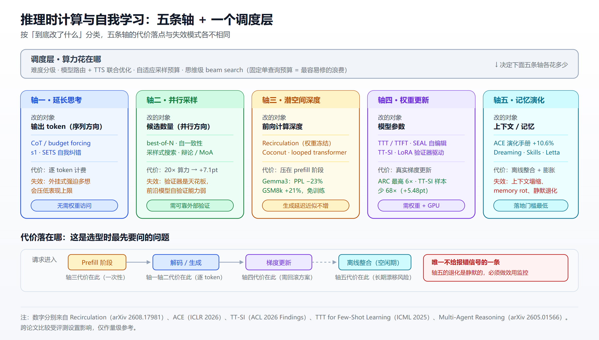
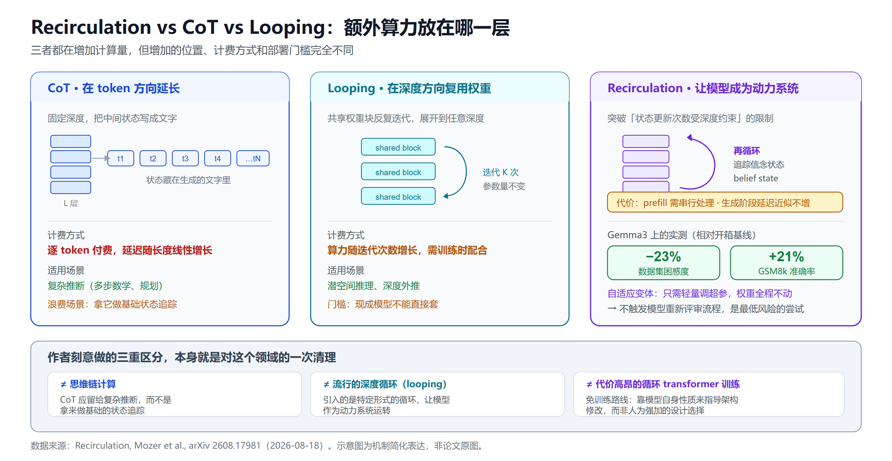
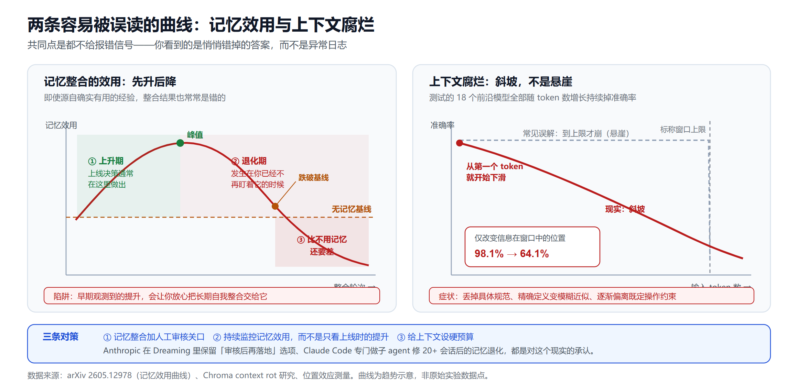

不重训也能变强：推理时计算与模型自我学习的 2026 全景
序言：三个数字，指向同一件事
先看三个来自不同团队的数字。
阿里通义实验室做了一套统一的推理时计算（Test-Time Compute，TTC）框架，让一个 32B 模型在 SWE-bench Verified 上拿到 46% 的 issue 解决率，显著超过 DeepSeek R1 671B 和 OpenAI o1。参数量差二十倍，结果反过来。
Michael Mozer 等人在 2026 年 8 月放出的 Recirculation，是一个完全不重训、原模型权重冻结、只轻调超参的推理时架构改动。在 Gemma3 系列上，它把一组数据集的困惑度降了 23%，GSM8k 准确率提升 21%，而生成阶段基本不增加延迟。
同一年，另一篇论文给出的结论方向完全相反：即使源自真正有用的经验，今天的 LLM 整合出来的记忆往往是错的。随着整合过程推进，记忆效用先升后降，最后能跌破"完全不用记忆"的基线。
三个数字指向同一件事：推理阶段已经从"把训练好的模型跑一遍"变成了一个可以独立设计、独立优化、也可以独立搞砸的系统层。而"模型自我学习改进"这个说法，在 2026 年其实同时指着五种性质完全不同的技术——它们的成本结构、失败模式、部署门槛都不一样，混着谈只会得出错误结论。
这篇文章把这五条轴逐一切开。每条轴我们会说清三件事：它到底改了什么、有哪些可验证的数字、以及它在什么地方会失效。
一、先分类：五条轴，一个调度层
术语混乱本身已经成了研究社区的问题。有一篇 2026 年的综述直接指出，"test-time scaling"这个词现在同时覆盖三类完全不同的算法：沿单一轨迹延长思考的、采样出完整候选后靠投票或验证来聚合的、以及在未完成的部分状态上做搜索的。把它们当成一个东西来比较，基准测试结果就不可复现。
我按"到底改了什么"来切，得到五条轴加一个调度层。

▲ 五条轴改动的对象各不相同：轴一二动的是 token，轴三动的是前向计算的深度，轴四动的是权重，轴五动的是上下文。调度层决定算力在这五者之间怎么分配。
五条轴的速览：
- 轴一 · 延长思考：同一条轨迹上生成更多 token。CoT、budget forcing、自我纠错。
- 轴二 · 并行采样：一次生成多个候选，再靠投票或验证器挑一个。best-of-N、self-consistency、采样式搜索。
- 轴三 · 潜空间深度：不多写 token，而是让同样的输入在模型内部多绕几圈。循环深度、looped transformer、Recirculation。
- 轴四 · 权重更新：推理时真的改模型参数。TTT、TTFT、SEAL、TT-SI。
- 轴五 · 记忆演化：模型和权重都不动，改喂给它的上下文。ACE、Dynamic Cheatsheet、Claude Dreaming。
- 调度层：决定上面这些手段在哪个查询上花多少算力。
一个有用的区分是代价落在哪里。轴一轴二的代价是输出 token 和延迟，轴三的代价可能只落在 prefill 阶段，轴四的代价是一次真实的梯度更新，轴五的代价是离线的整合计算和长期的上下文膨胀。这四种代价在生产环境里完全不是一回事。
二、轴一：同一条轨迹上想得更久
这是最直观的一条，也是被 o 系列和 DeepSeek R1 打成主流认知的一条：给模型更多思考预算，它在数学、代码、推理任务上会更准。
具体方案
Budget forcing 是最朴素的实现。斯坦福那篇 s1 的思路就是在解码时强制模型继续想或者提前停下，用一个极简机制换来可观的提升。
自我验证 + 自我纠错是加一层循环。SETS 把采样、验证、纠错统一进一个框架，利用模型本身固有的自我验证和自我纠错能力，不需要任何额外训练就能实现可扩展的推理时计算。
边界在哪
这条轴的问题已经被两篇工作分别捅破。
一篇分析指出，简单的 test-time scaling 在缩减规模时会逐步压低模型表现的上限，而 o1 类模型因为是在强化学习过程中学会自然地扩展推理量，反而能超过自身的峰值表现。换句话说，"外挂式"地强迫模型多想，和"内生式"地学会多想，效果曲线是不一样的。
另一篇更直接：单纯加宽采样会遭遇边际收益递减，因为新的 rollout 常常只是在重复已有的答案模式，而不是补充有效的推理多样性。你付了 token 钱，买到的是同一个想法的不同措辞。
这个发现很重要，因为它直接催生了轴二上的一系列改进——如果多采样的价值在于多样性，那就得想办法让多样性真的产生。
三、轴二：多采样再挑一个，瓶颈在验证器
轴二的逻辑很简单：生成 N 个候选，挑最好的那个。问题在于"怎么挑"。
Google 的关键实验
Google Research 和 UC Berkeley 的一项工作研究了采样式搜索的缩放趋势，结论出人意料地朴素：只用随机采样加直接自我验证的极简实现，把规模拉上去就能持续提升，足以把 Gemini 1.5 Pro 的推理能力推过 o1-preview。
他们把这种可扩展性部分归因于一个叫"隐式缩放"（implicit scaling）的现象：采样出更大的候选池，反过来会让验证准确率本身变高。这是个正反馈——池子越大，不仅命中好答案的概率高，判断哪个是好答案的能力也在变强。
同一篇工作给出两条可操作的原则：
- 跨候选做比较，能提供关于错误和幻觉位置的有用信号。单独看一个答案很难判断对错，把几个答案摆在一起，分歧点往往就是问题所在。
- 不同的输出风格适配不同场景。思维链有利于推理，但更难被验证。
但他们也留下一句让人清醒的话：前沿模型开箱即用的验证能力出奇地弱。他们为此专门建了一个基准来衡量这方面的进展。
这句话是整条轴二的软肋。所有 best-of-N 类方法都建立在"能挑出对的那个"这个假设上，而这个假设在通用任务上并不牢固。代码和数学之所以是 TTC 的最佳战场，很大程度上是因为它们自带执行验证和形式检查这类外部真值。
其他变体
多序列验证器把验证从"逐个打分"改成"联合判断"。多智能体方向也有对照数据：在等算力预算下，辩论和 mixture-of-agents 分别比 self-consistency 高 1.3 和 2.7 个百分点，而在最高预算（CoT 算力的 20 倍）下，推理时缩放相比 CoT 在 MMLU-Pro 上最多提升 7.1 个百分点。
7.1 个百分点换 20 倍算力，这个兑换率就是轴二的真实定价。它不便宜，但在某些场景里划算——这取决于错误的代价有多高。多智能体的工程细节可以参考我之前写的多智能体协作框架指南。
四、轴三：在深度里想 —— Recirculation 及其同类
这条轴最容易被忽略，但 2026 年的进展最有意思：不多写一个 token，只让计算在模型内部多绕几圈。
Recirculation 做了什么
Mozer、Siddiqui、Sawyer、Sanyal 和 Rosanne Liu 在 2026 年 8 月发布的 Recirculation，定位是给现成基础模型做的推理时架构增强。
动机干净得像教科书：前馈 transformer 的状态更新受模型深度约束。一个 32 层的模型，无论输入多复杂，它更新内部状态的机会就是 32 次。Recirculation 引入一种特定形式的循环，让模型能像动力系统那样运转、追踪信念状态（belief state）。
作者做了三重区分，这三条区分本身就是对这个领域的一次清理：
- 不同于 CoT。他们的原话大意是，思维链计算更应该留给复杂推断，而不是拿来做基础的状态追踪。用一长串 token 来记住"现在轮到谁说话了"这种事，是把昂贵的手段用在了廉价的问题上。
- 不同于流行的深度循环（looping）技术。
- 不同于代价高昂的循环 transformer 训练。
成本结构才是亮点
Recirculation 的自适应变体只需要轻量调超参，原始模型权重全程冻结。相对开箱基线，在 Gemma3 系列上：
- 一组数据集上困惑度降低 23%
- GSM8k 准确率提升 21%
- 其他下游任务有稳定提升
代价方面：生成阶段基本不增加延迟，但 prefill 阶段需要串行处理。
这个成本画像和轴一轴二完全不同。轴一轴二的代价是每个 token 都要付的，而 Recirculation 把代价压在 prefill 这个一次性阶段。对于输出长、输入短的场景，这笔账非常划算；对于长上下文短输出的场景，就要重新算。关于长上下文场景本身的工程取舍，可以看长上下文工作流指南。
和"自我学习"的连接点
论文最后一句话是我觉得最值得琢磨的：这种免训练方法之所以成立，是靠模型自身来指导架构修改，这指向一条由已训练网络的自身性质来引导架构演化的路，而不是人为强加的任意设计选择。
这其实是"自我改进"的第三种形态。轴四是模型自己生成训练数据改自己的权重，轴五是模型自己写笔记改自己的上下文，而 Recirculation 是模型自己的性质告诉你该怎么改它的结构。三者的自主性程度不同，但方向一致。

▲ CoT 把算力花在输出 token 上，逐 token 计费；looping 复用权重加深计算，训练时就要考虑；Recirculation 把额外计算压在 prefill 阶段，权重冻结、生成阶段近似零延迟增加。
同轴的其他方案
循环深度 latent 推理：迭代一个循环块，使模型在测试时可以展开到任意深度，在潜空间里隐式推理。
Coconut（连续潜空间推理）：Meta 的这条路线有个很漂亮的发现——连续思维可以同时编码多个候选的下一步推理，让模型实际上在做广度优先搜索，而不像 CoT 那样过早锁定单一确定路径。这解释了为什么潜空间推理在某些搜索型任务上表现更好。
Looped / recurrent-depth transformer：复用权重来增加计算深度而不增加参数量，天然适配潜空间推理。有工作显示，超出训练深度的泛化能力可以通过扩大推理时的循环次数来解锁，迭代越多、推理越深。
结构化数据上的潜式 CoT：一个具体的落地数据——在 36 个数据集上，时序预测 8/9 个数据集有提升（平均 +10.99%），表格预测 22/27 个有提升（平均 +5.31%）。
五、轴四：真的改权重 —— TTT、SEAL、TT-SI
前三条轴都不动模型参数。轴四动。
Test-Time Training 的实证战果
TTT 最有说服力的战场是 ARC。MIT 的 Akyürek 等人（ICML 2025）显示，带上下文样例做 TTT，在 ARC 上准确率相比微调基线最高提升 6 倍，一个 8B 参数的语言模型在公开验证集拿到 53.0%，与程序合成方法集成后达到 61.9%，追平人类平均水平。
ARC Prize 2024 的技术报告给出了赛道层面的数字：私有评测集的 SOTA 从 33% 提到 55.5%，主要推动力是深度学习引导的程序合成和 test-time training。
另一支工作把这条路走得更极端：他们把神经网络和优化器都当作推理过程的组成部分，而不只是用一个预训练好的网络。报告的提升是 AIRV（Augment Inference Reverse-Augmentation and Vote）带来最多 260% 的准确率提升，再叠加 TTFT（Test-Time Fine-Tuning）又有 300% 的提升。
最极端的是 CompressARC：完全不预训练，所有学习都在推理时发生，唯一的输入数据就是当前这道题本身，在 ARC-AGI-1 评测题上拿到 20%。这个数字绝对值不高，但它证明了一个概念——推理时的梯度下降本身就能获得抽象。
ARC-AGI-2 的一份技术报告也把 TTT 列为四个关键设计之一：用轻量 LoRA 适配做 test-time training，让模型从演示样例里学出每道未见任务的变换逻辑。
SEAL：让模型自己写自己的训练数据
MIT 的 SEAL（Self-Adapting LLMs，NeurIPS 2025）是这条轴上概念最完整的框架。
机制是这样的：模型针对新任务或新信息，自己生成微调数据和更新指令，统称"self-edit"。通过监督微调，这些 self-edit 变成持久的权重更新，带来长期的适应能力。而为了教会模型生成有效的 self-edit，外层用一个强化学习循环——把更新后模型的下游表现直接当作奖励信号。
MIT News 的描述最直观：模型对同一个输入生成多个 self-edit，逐个应用看哪个提升最大，这个试错过程教会它怎么最好地训练自己。
这里的双层结构值得注意。内层是"用自己生成的数据微调自己"，外层是"用微调后的效果来学习怎么生成数据"。后续工作已经在放松 SEAL 的约束——有人拿掉了固定的人工模板，允许模型生成自己的 self-edit 模板，从而对自己的训练数据和超参数有更多控制权。
TT-SI：更省的版本
TT-SI（ACL 2026 Findings）把流程压成三步，每一步都对应一种"自我"能力：
- 自我觉察：先识别出模型自己吃力的样本
- 自我数据增强：从这些不确定的样本出发，生成相似的例子
- 自我改进：用这批新生成的样本做测试时训练
效果是平均 +5.48% 的绝对准确率提升，而训练样本量少了 68 倍。作者还探索了一个 TT-D（Test-Time Distillation）变体，用更强的监督模型来做定向数据生成。
68 倍这个数字比 5.48% 更重要。它说明这条路线的真正价值不在于天花板更高，而在于同样的提升可以用极少的数据换到——数据稀缺的垂直领域是它的主场。微调框架本身的选型可以参考大模型微调框架横评。
落地障碍写得很清楚
一篇 2026 年的 In-Place TTT 工作直接列出了 TTT 在当前 LLM 生态里的三大障碍：
- 架构不兼容
- 计算低效
- fast weight 的优化目标与语言建模目标不对齐
第三条最要命。TTT 更新的那部分参数在优化什么，和模型原本被训练去做的事情，两者的目标函数并不一致。这不是工程问题，是设计问题。
另有工作走了验证器驱动的路子：只微调低秩 LoRA 适配器参数以保证适配效率和快速收敛，并合成验证器驱动的测试时训练数据来做持续自我改进。LoRA 在这里不只是省显存，更是限制损害范围的手段——冻结主干意味着搞砸了还能回滚。
六、轴五：改上下文，不改模型 —— 落地最快的一条
如果轴四是"给模型换脑子"，轴五就是"给模型换笔记本"。这条轴 2026 年跑得最快，因为它不需要 GPU、不需要梯度、不需要模型访问权限。
ACE：把上下文当成不断演化的战术手册
斯坦福和 SambaNova 的 ACE（Agentic Context Engineering，ICLR 2026）是这条轴上最完整的框架。它把上下文当成不断演化的战术手册（playbook），通过生成、反思、策展三个模块化步骤来累积、精炼和组织策略。
数字：Agent 任务 +10.6%、金融任务 +8.6%，同时显著降低适配延迟和 rollout 成本。它既能离线优化系统提示词，也能在线优化 agent 记忆。
ACE 建立在 Dynamic Cheatsheet 提出的自适应记忆之上，但它要解决的核心问题是前代方法的上下文塌缩。斯坦福记录的一个案例足够触目：一份 18,282 token 的上下文原本有 66.7% 的准确率，在下一次更新之后被压缩成 122 token，准确率掉到 57.1%——比 63.7% 的完全不优化基线还差。
这个案例解释了 ACE 为什么要设计"增量更新 + 策展"而不是"整体重写"。让 LLM 每轮重写整个上下文，它会不断做有损压缩，最终把有用的细节压没了。
Anthropic 的 Dreaming：产品化的记忆整合
2026 年 5 月 6 日，Anthropic 在 Code with Claude 大会上以研究预览形式发布了 Dreaming。
它是 Claude Managed Agents 里的一个定时进程：回看 agent 的会话记录和记忆库，抽取模式，策展记忆。官方文档描述得很具体——一次 dream 会读取现有记忆库和过往会话记录，然后产出一个重新组织过的新记忆库：重复项被合并，过期或自相矛盾的条目被最新值替换，新的洞见被浮现出来。
控制权在用户手里：dreaming 可以自动更新记忆，也可以让人先审核再落地。
命名是刻意的。Forbes 的报道点出了这层类比：这个系统在做的事，正是人类认知理论中梦所做的事——回顾过往经验、识别模式、整合记忆、丢弃不再有用的东西。
同一时期，Claude Code 也在推 Auto Dream，一个四阶段的后台子 agent，专门修 20 次以上会话之后自动记忆质量下降的问题：重复、过期日期、自相矛盾。它的 system prompt 已经公开在 GitHub 上。
这两个功能一起说明一件事：记忆整合已经不是研究课题，而是一个必须解决的生产事故来源。厂商开始做它，不是因为它能让 agent 变聪明，而是因为不做它 agent 会变笨。
更基础的设施
Claude memory tool：让 Claude 在一个记忆文件目录里存取信息，跨会话创建、读取、更新、删除文件，随时间累积知识而不必把所有东西都留在上下文窗口里。
Agent Skills / SKILL.md：2025 年 10 月 Anthropic 推出的方案，本质上是一个装着 markdown 文件的文件夹，用自然语言告诉 agent 怎么做一件具体的事，而 agent 只在这件事出现时才去读它。简单到近乎粗暴，但按需加载这个设计正好对上了上下文预算的约束。
Letta / sleep-time compute：思路是让 agent 在空闲时间而不是推理时刻去理解上下文——把原始上下文在系统空闲时转换为"学习过的上下文"，其中包含预计算的推理过程、中间结论和预测分析，从而在用户查询到来时快速响应。工程收益很实在：首 token 延迟降低 3 到 5 倍，同样的流量用更少的算力余量就能扛住。
Hermes Agent：Nous Research 在 2026 年 2 月开源的自托管自我进化 agent 框架，核心是学习闭环和持久记忆，能从使用经验中自动创建 Skill。想动手的可以看Hermes Agent 部署教程和AutoReason 机制拆解。
不过 Letta 自己在博客里说了句实话，值得原样对待：现有的 sleep-time compute 方法——包括自学习和技能学习这类——太贵了，扩不到大规模语料，而且存在过度泛化和 memory rot 的问题。
厂商承认自己方案的局限，通常比第三方批评更可信。开源记忆系统的横向对比可以看AI Agent 记忆系统开源方案指南。
七、架构级下注：Nested Learning 与 HOPE
前面五条轴都是在现有 transformer 上加东西。Google 在 2025 年 11 月的 Nested Learning 是往下挖了一层。
它把模型看成一组更小的嵌套优化问题，每个都有自己的内部工作流和更新频率，目标是缓解甚至完全避免"灾难性遗忘"——学新任务时牺牲旧任务熟练度的那个老问题。
配套架构叫 HOPE，由自修改序列模型和 Continuum Memory System 组合而成，在语言建模、知识吸收和推理上报告了有希望的结果。
Nested Learning 提出的那个更抽象的主张更值得注意：它建议用更多层级来设计更有表达力的学习算法，从而得到更高阶的上下文学习，并有可能解锁真正有效的持续学习能力。
这条路线的时间尺度和前面五条不同。轴一到轴五今年就能上生产，Nested Learning 是在赌未来几年的架构走向。它值得跟踪，但现在不该进技术选型表。关于 Scaling Law 之后的路线全景，我们在从 Scaling Law 瓶颈到 ASI里做过更系统的梳理。
八、调度层：问题已经从"花多少"变成"花在哪"
这是 2026 年推理时计算研究最集中的地方，也是工程团队实际会碰到的第一个问题。
有一篇做思维级 beam search 的工作把这个转变说得最准：推理时算力缩放是大型推理模型表现的主要驱动力，但当前方法的极端低效限制了它们，关键问题因此从"花多少算力"变成了"算力花在哪"。
问题的根源很具体：许多流水线使用固定的单查询预算，在简单和困难的 prompt 上花同样的算力。这在账单上直接体现为浪费。
已有的解法方向：
- 约束策略优化做自适应 TTC 分配，通过重复采样、搜索或延长推理来分配额外计算
- 模型路由与 TTS (Test-Time Scaling) 的在线联合优化：路由在不同规模的模型间切换以匹配请求复杂度，TTS 在固定模型内调节推理算力做细粒度控制，两者原本是彼此独立的两个维度，现在被合起来优化
- 可解释的自适应采样：按查询难度动态决定采样预算
- 视觉语言模型的自适应 TTS：VLM 受益于 CoT 和 TTS，但因为视觉上下文巨大、解码链很长，代价常常高到不可接受
还有一条被低估的路：上下文内蒸馏。有工作把知识蒸馏的思路搬到上下文学习里，实现免训练的成本降低，在 ALFWorld 上成本降到 1/2.5，在 AppWorld 上降到 1/2，同时保持准确率。
调度层的存在本身说明了一件事：推理时计算已经不是"要不要用"的问题，而是一个需要在线优化的资源分配系统。这块的可观测性建设可以参考Langfuse 可观测性实践。
中国团队的成本证据
回到开头那个 32B 的例子。阿里通义实验室的框架有两条互补策略：
- 内部 TTC：用真实软件仓库做"开发上下文化的轨迹合成"，来自举多阶段推理过程，比如故障定位和补丁生成；再用拒绝采样按准确性和复杂度严格评估来提升轨迹质量
- 外部 TTC：奖励模型和执行验证引导的开发流程搜索，在关键开发决策点做定向算力分配，突破现有"只验证终点"方法的局限
在 SWE-bench Verified 上，32B 模型达到 46% 的 issue 解决率，超过 DeepSeek R1 671B 和 OpenAI o1。
这个结果的现实意义在于：它给"单卡能跑的开源模型"提供了一条追赶闭源大模型的具体路径。对于必须私有化部署的场景，这比等一个更大的开源模型要靠谱。评测方法本身的坑可以看大模型评测指南。
九、坏消息清单：这些方案怎么失效
到这里全是好数字。但这个领域最容易被跳过的部分，恰恰是失败模式。
记忆会变质，而且是先好后坏
最直接的一记警钟来自那篇《Useful Memories Become Faulty When Continuously Updated by LLMs》。核心发现：即使源自确实有用的经验，今天的 LLM 整合出来的记忆往往是错的。而且失效方式很阴险——随着整合过程推进，记忆效用先上升，然后下降，最后可以跌破完全不用记忆的基线。
先上升这一点是陷阱所在。如果你在早期观测到记忆机制带来提升，就据此上线并放手让它长期自我整合，那么真正的退化会发生在你已经不再看它的时候。

▲ 左：记忆整合的效用不是单调上升，早期观测到的提升会误导上线决策。右：上下文腐烂不是到达窗口上限才崩的悬崖，而是从第一个 token 就开始的斜坡。
上下文腐烂是斜坡，不是悬崖
Chroma 的 context rot 研究测了 18 个前沿模型，结论是每一个都随输入 token 数增长持续掉准确率，而且这是一条从第一个 token 就开始的斜坡，而不是到达上限时才出现的悬崖。
还有一个更刺眼的测量：仅仅改变信息在上下文窗口里的位置，GPT-4 的准确率就从 98.1% 掉到 64.1%。
Salesforce 对症状的描述很适合拿来做排查清单：agent 会丢掉具体的规范条款、把精确定义替换成模糊的近似说法、逐渐偏离既定的操作约束。这种静默退化对依赖跨会话可重复行为的企业工程团队是个严重问题。
它不给你报错信号，只给你悄悄错掉的答案。 这句话是所有轴里五个方案的共同风险。
在编程 agent 上，context rot 的具体表现是架构漂移、风格违规、把已经讨论过并被否决的代码模式又重新引入。这和我在Vibe Coding 的隐藏代价里写过的问题是同源的。
长会话是压力最大的场景
即使是百万 token 以上窗口的模型，对跨天的 agent 会话也不够用——工具调用、文件内容和中间推理的体积会超过任何生产级 LLM 的上下文上限。而这个问题会被 context rot 复合放大：模型表现在远未触及标称上限时就已经开始退化。
有从业者的总结更直白：agent 记忆仍然是生产 agent 系统里最常见的静默故障点之一。任务中途忘掉指令、幻觉出不存在的历史上下文、长会话里逐渐退化——这些不是边缘情况，而是把记忆当成事后补丁时的默认结果。
验证能力是隐藏的天花板
前面提过但值得再强调：前沿模型开箱即用的验证能力出奇地弱。所有依赖"生成多个再挑一个"的方案，性能上限都被验证器锁着。在有执行反馈的代码任务上这不是问题，在开放式任务上这是根本问题。
成本不会自己消失
轴一轴二的算力代价是真实的：7.1 个百分点要 20 倍 CoT 算力。Letta 承认 sleep-time compute 的现有方法太贵、扩不到大规模语料。能耗研究也在提醒，transformer 的输入输出 token 动态会导致非线性的硬件能耗曲线，这意味着按 token 数做的成本估算可能系统性偏低。这些隐性成本和我在Agent 治理与可观测性的隐藏成本里讨论的是同一类账。
十、工程选型：五条轴分别适合谁
把上面的东西压成一张判断表。
如果你没有模型权重访问权（只能调 API）
可选的是轴一、轴二、轴五。优先做轴五里的 Agent Skills / 记忆文件这类最轻的方案——按需加载、可人工审核、出问题能直接改文件。轴二只在你有可靠的外部验证（单元测试、执行结果、形式检查）时才划算，否则你是在为一个弱验证器付 N 倍算力。
如果你有权重但没有大量数据
轴四是为你准备的。TT-SI 那个"少 68 倍样本"的数字说明这条路的价值就在数据稀缺场景。用 LoRA 限制损害范围，保留回滚能力。别指望它带来数量级提升，指望它用极小的数据成本吃掉最后几个百分点。
如果你在做私有化部署且预算受限
优先看轴三和调度层。Recirculation 这类权重冻结、只调超参的方案是最低风险的尝试——权重不动意味着不需要重新走模型评审流程。阿里通义那套 TTC 框架给的是另一条路：用推理时算力换参数规模，让单卡能跑的模型顶上去。推理框架本身的选型见推理框架横评。
如果你已经在跑长期 agent
坏消息清单里的每一条都是你的问题。必须做三件事：给记忆整合加人工审核关口（Anthropic 的 dreaming 提供这个选项不是偶然）、建立记忆效用的持续监控而不是只看上线时的提升、给上下文设硬预算而不是等它自然膨胀到窗口上限。企业侧的完整部署考虑见企业 AI Agent 部署指南。
任何情况下都该做的一件事
别用固定的单查询算力预算。简单和困难的 prompt 花同样算力是最容易发现也最容易修的浪费。哪怕只做一个粗糙的难度分级路由，收益也立竿见影。
小结
"大模型在推理时自我学习"这个说法在 2026 年是成立的，但它成立的方式和很多人想的不一样。
真正跑通的部分，是用推理阶段的可设计性换取训练阶段的成本。Recirculation 用冻结权重加轻量超参调整换到 Gemma3 上 21% 的 GSM8k 提升，阿里通义用 TTC 框架让 32B 顶过 671B，TT-SI 用少 68 倍的样本拿到 5.48% 的绝对提升——这三个结果的共同点不是"模型变聪明了"，而是同样的能力可以用更便宜的方式获得。
真正还没跑通的部分，是长期自主的自我改进。ACE 的上下文塌缩案例、记忆整合效用跌破基线的曲线、18 个模型全线中招的 context rot、Letta 自己承认的 memory rot 和过度泛化——这些不是实现细节没打磨好，而是"让 LLM 反复重写自己的知识"这件事目前缺少稳定性保证。Anthropic 在 Dreaming 里保留人工审核选项、Claude Code 专门做一个子 agent 去修 20 次会话之后的记忆退化，都是对这个现实的承认。
所以给出的判断是：推理时计算作为成本优化手段，现在就该用；作为自主进化机制，现在必须带着人在回路里用。
至于 Nested Learning 那条架构级的路，如果它真的解决了灾难性遗忘，上面这段话在两三年后就得重写。这是我今年最愿意持续跟踪的方向。
免责声明
本文所引用的论文数据、基准分数和产品功能描述均来自公开来源，截至 2026 年 8 月。学术论文的结果可能尚未经过独立复现，基准测试成绩受评测设置、prompt 模板和评分方式影响较大，跨论文比较需谨慎。产品功能（尤其是研究预览阶段的功能）可能随时变更或下线。本文不构成任何技术选型、采购或投资建议，实际部署前请以官方文档和自有环境的实测结果为准。
参考来源
推理时架构与潜空间深度：
- Recirculation - arXiv 2608.17981
- Scaling up Test-Time Compute with Latent Reasoning - arXiv 2502.05171
- Training Large Language Models to Reason in a Continuous Latent Space - arXiv 2412.06769
- Bridging the Gap Between Latent and Explicit Reasoning with Looped Transformers - arXiv 2606.31779
- Implicit Reasoning in Recurrent-Depth Transformers - arXiv 2604.07822
- Latent Chain-of-Thought Improves Structured-Data Transformers - arXiv 2605.11262
- Depth-Recurrent Transformers for Compositional Generalization - arXiv 2603.21676
推理时计算与采样搜索：
- Sample, Scrutinize and Scale: Effective Inference-Time Search by Scaling Verification - arXiv 2502.01839
- s1: Simple test-time scaling - arXiv 2501.19393
- It's Not That Simple. An Analysis of Simple Test-Time Scaling - arXiv 2507.14419
- SETS: Leveraging Self-Verification and Self-Correction for Improved Test-Time Scaling - arXiv 2501.19306
- Refining Over Resampling: Test-Time Self-Correction for LLM Reasoning - arXiv 2608.05643
- Parallel Test-Time Scaling with Multi-Sequence Verifiers - arXiv 2603.03417
- Multi-Agent Reasoning Improves Compute Efficiency - arXiv 2605.01566
- Test-Time Scaling in Reasoning LLMs: Inference Regimes, Evaluation, and Reproducibility - arXiv 2608.04001
- Thinking Longer, Not Larger: Enhancing Software Engineering Agents via Scaling Test-Time Compute - arXiv 2503.23803（阿里通义实验室）
推理时训练与权重自适应：
- Self-Adapting Language Models (SEAL) - arXiv 2506.10943
- SEAL - NeurIPS 2025
- Teaching large language models how to absorb new knowledge - MIT News
- SEAL 开源实现 - GitHub
- Search over Self-Edit Strategies for LLM Adaptation - arXiv 2601.14532
- TT-SI: Self-Improving LLM Agents with Test-Time Training - ACL 2026 Findings
- Self-Improving LLM Agents at Test-Time - arXiv 2510.07841
- The Surprising Effectiveness of Test-Time Training for Few-Shot Learning - arXiv 2411.07279
- 同上 - PMLR (ICML 2025)
- ARC Prize 2024 Technical Report - arXiv 2412.04604
- Don't throw the baby out with the bathwater (TTFT + AIRV) - arXiv 2506.14276
- ARC-AGI Without Pretraining (CompressARC) - arXiv 2512.06104
- ARC-AGI-2 Technical Report - arXiv 2603.06590
- In-Place Test-Time Training - arXiv 2604.06169
- Continuous Self-Improvement of LLMs by Test-time Training with Verifier-Driven Sample Selection - arXiv 2505.19475
- Test-Time Learning for Large Language Models - arXiv 2505.20633
上下文演化与记忆：
- Agentic Context Engineering (ACE) - arXiv 2510.04618
- ACE - ICLR 2026
- The End of Static Prompts: Stanford's ACE Framework
- New in Claude Managed Agents: dreaming, outcomes, and multiagent orchestration - Anthropic
- Dreams - Claude Platform Docs
- Claude's New Dreaming Feature Builds Self-Improving AI Agents - Forbes
- Anthropic Adds Auto Dream to Claude Code - implicator.ai
- Memory tool - Claude Platform Docs
- What Are Agent Skills? SKILL.md Explained
- Memory Models: Towards Agents That Learn - Letta
- Sleep-Time Compute on GPU Cloud - Spheron
- Sleep-time Compute 论文解读 - 博客园
- Hermes Agent 部署详细教程 - 博客园
- In-Context Distillation with Self-Consistency Cascades - arXiv 2512.02543
失效模式与成本：
- Useful Memories Become Faulty When Continuously Updated by LLMs - arXiv 2605.12978
- What Is Context Rot? - Salesforce
- Context Window Deep Dive - Atlan
- Context Engineering: Memory, Compaction, and Tool Clearing - tianpan.co
- The New Reality of Agent Memory - SitePoint
- Context Rot in AI Coding Agents - MindStudio
- Lossless Context Management - arXiv 2605.04050
- Advocating Energy-per-Token in LLM Inference - arXiv 2603.20224
调度与自适应分配：
- Adaptive Test-Time Compute Allocation for Reasoning LLMs via Constrained Policy Optimization - arXiv 2604.14853
- Adaptive Unified Inference Scaling via Online Joint Optimization of Model Routing and Test-Time Scaling - arXiv 2605.30898
- Interpretable Adaptive Sampling for LLM Test-Time Scaling - arXiv 2608.03961
- Thought-Level Beam Search for Reasoning - arXiv 2608.08020
- Adaptive Test-Time Scaling for Vision-Language Models - arXiv 2606.11576
架构与持续学习：
- Introducing Nested Learning: A new ML paradigm for continual learning - Google Research
- Nested Learning: The Illusion of Deep Learning Architectures - arXiv 2512.24695
- Nested Learning: A Fix for Catastrophic Forgetting - DataCamp
相关阅读
- 从 Scaling Law 瓶颈到 ASI：五种突破路线的有效性与未来展望
- AI Agent 记忆系统开源方案指南
- 大模型微调框架横评
- 大模型推理框架横评
- 长上下文大模型工作流指南
- Langfuse：LLM 与 Agent 可观测性实践
- Agent 治理与可观测性的隐藏成本
- 企业 AI Agent 部署指南
- 多智能体协作框架指南
- 大模型评测指南：MMLU、SWE-bench 与 Arena
- Hermes Agent 部署教程
- Hermes Agent AutoReason 机制拆解
- Vibe Coding 的隐藏代价与安全风险
- Loop Engineering：2026 最热的 AI 概念
推荐搭配装备
善其事，利其器。以下硬件能最大化你的AI体验👇
🔗 通过以上链接购买可支持本站持续运营 🙏